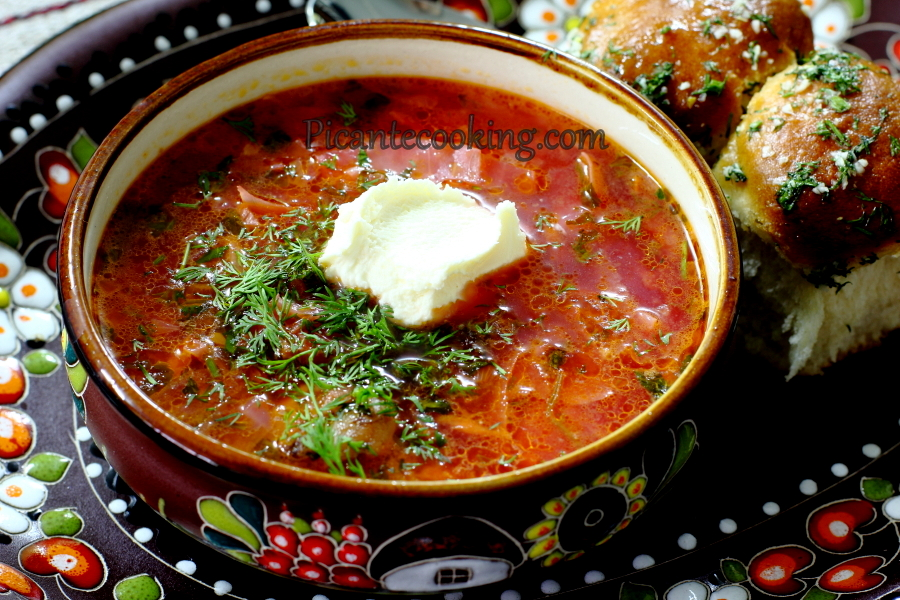

Найбільшою популярністю користується рецепт українського борщу. Для
того, щоб простіше зварити борщ на допомогу господиням приходить
мультиварка.

Борщ – класичне блюдо слов'янської кухні. Борщ густий овочевий суп,
головний інгредієнт якого – буряк. Як зварити смачний борщ - все
залежить тільки від вас. У кожній сім'ї є свій рецепт як приготувати
борщ - хтось додає гриби, хтось квасолю. Борщ - заправний овочевий суп,
люблять у багатьох країнах. У Київській Русі борщ готували з їстівного
листя борщівника (звідси назва). Пізніше стали варити з буряком (звідси
колір). З XIX століття додають картоплю.